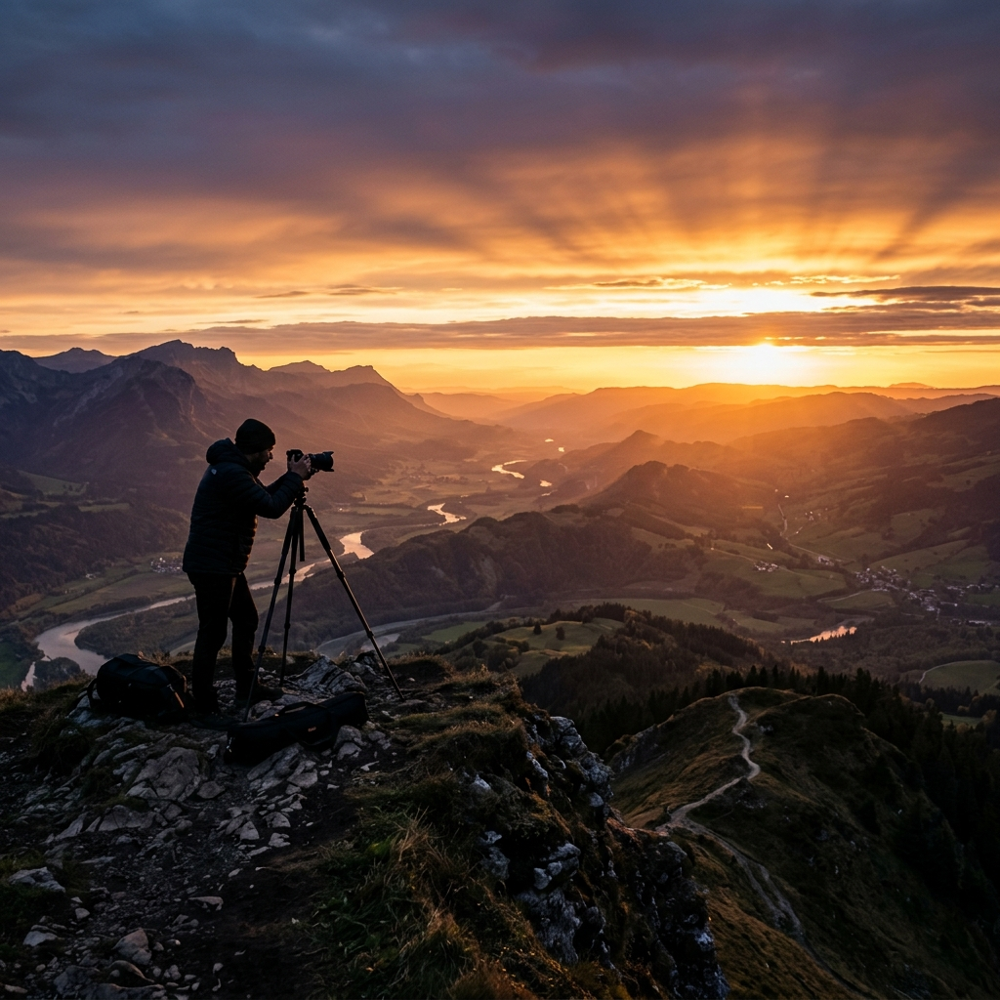

Landscape
Photograph the natural world.
The Art of Nature Photography
Nature photography demands patience, respect for the environment, and an eye for composition. From sweeping landscapes to intimate macro details, the natural world offers infinite creative possibilities.
Read More